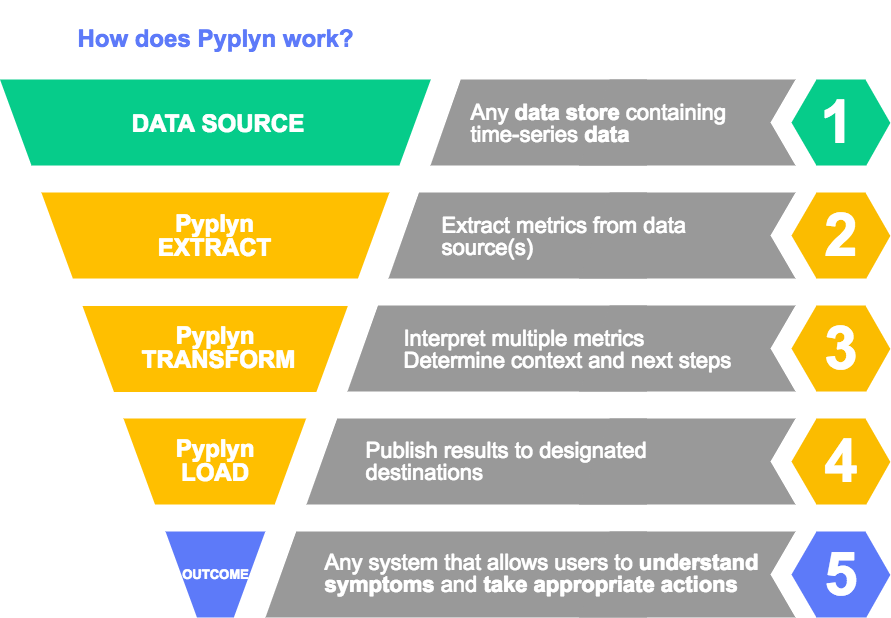

Introduction

Pyplyn (meaning pipeline in Afrikaans) is an open source tool that extracts data from various sources, transforms and gives it meaning, and sends it to other systems for consumption.
Pyplyn was written to allow teams in Salesforce to power real-time health dashboards that go beyond one-to-one mapping of time-series data to visual artifacts.
One example of such a use case is ingesting time-series data stored in Argus and Refocus, processing multiple metrics together (with context), and displaying the result in Refocus (as red, yellow, or green lights).

What does Pyplyn solve?
A time-series of historical data works well for understanding the evolution of metrics over time, but it doesn't give you much help when it comes to explaining what the data means right now.
Take a look at the following example:

This chart shows two metrics and a threshold. But, at a glance, it doesn't really tell you if there's a problem or not. Your attention is drawn towards the two spikes, which may or may not be the most relevant thing. It's also not clear what the threshold applies to: is the errors per minute, or the response time? (And, is the average response time above or below the threshold?)
Providing enough information to allow engineers to determine health, using line charts alone, is a tall order. In most cases, it requires too much visual interpretation to be helpful in a time-critical situation.
This is where Refocus steps in, and why Pyplyn exists: to complement Refocus's visualization capabilities by providing a robust pipeline that feeds dashboards with fresh data.
Overview

Key features
- Simple and reliable data pipeline with support for various transformations
- No code required - Uses a JSON-based syntax
- Flexible multi-stage source/transformation/destination logic
- Developed with support for extension via easy-to-grasp Java code
- Highly available and scalable (the pipeline can be partitioned across multiple nodes)
- Configurations can be added/updated/removed without restarting the process
- Publishes operational metrics (errors, p95, etc.) for monitoring service health
Improvements from release 9.x
- Faster processing speed with the use of RxJava (4.3x faster, tested on our reference dataset)
- Cleaner code, mainly after converting models Immutables-annotated abstract classes
- Support mutual TLS authentication for endpoints, by specifying a Java keystore and password
- Connect, read, and write timeouts can now be specified for each connector
- All Jackson-based models can now be serialized (with the type specifier field)
AppConfig.Global.minRepeatIntervalMilliswas deprecated (replaced withAppConfig.Global.runOnce)- Bash script for managing the service's lifecycle (start, stop, restart, logs, etc.)
- Since 10.0.0, Pyplyn releases follow Semantic versioning guidelines.
Planned development
Breaking changes
- Remove AppConfig.Global.minRepeatIntervalMillis
- Rename HighestValue.messageCodeSource to tagMessageCode
- Rename the configurations moniker since it has proven confusing (in relation to
AppConfig)
Roadmap
- Extract source: Execute a Salesforce SOQL query
- Load destination: Email (via SMTP MTA)
- Load destination: Post a Salesforce Chatter Feed Item
- Load destination: Create a Salesforce Record
- API for managing configurations
- API for managing connectors
- Multi-tenancy (support configurations and connectors belonging to different users)
- Include Pyplyn in the Maven central repository
Concepts
Let's start with an overview of a few basic concepts in Pyplyn.
AppConfig
The AppConfig represents the primary object used to configure Pyplyn's behavior (endpoint connectors, the path to configurations, self-monitoring alerting threshold, and high-availability settings).
The application config has three sections: global, alert, and hazelcast; they are explained below.
AppConfig.Global
{
"global": {
"configurationsPath": "/path/to/configurations/dir",
"connectorsPath": "/path/to/connectors.json",
"updateConfigurationIntervalMillis": 300000
"runOnce": false,
},
"alert": {
"checkIntervalMillis": 60000,
"enabled": true,
"thresholds": {
"MeterNameMeterTypeStatusCode": 1.0
}
},
"hazelcast": {
"config": "/hazelcast.xml"
"enabled": false,
}
}
This is the only mandatory section of the AppConfig. See the following explanations as to what each of these parameters does:
| Parameter | Default | Description |
|---|---|---|
| configurationsPath | required | This should point to a directory which contains the Pyplyn configurations to process |
| connectorsPath | required | A single JSON file which lists service endpoint connectors used by Pyplyn's plugin to extract data and push results |
| updateConfigurationIntervalMillis | required | The number of milliseconds at which Pyplyn periodically reloads all configurations from disk (if any configurations are removed from this directory, they will no longer be processed after the configuration update process' next run) |
| ioPoolsThreadSize | optional | Defaults to 100 threads per IO pool; can be updated to increase or decrease the number of threads in the dedicated Extract and Load thread pools (for tweaking performance depending on the deployment hosts) |
| runOnce | optional | Defaults to false, which means the service runs indefinitely or until terminated by the host OS; set to true to process the specified configurations only once, then exit (useful if you want to run Pyplyn with crontab, or for testing) |
AppConfig.Alert
Pyplyn will report a status of CRITICAL if it registers less than 25 successful Refocus extract operations in the specified checkIntervalMillis
"RefocusExtractSuccessCRIT": 25.0
Pyplyn will report a status of WARNING if it registers more than 25 failed Refocus authentication attempts in the specified checkIntervalMillis
"RefocusAuthenticationFailureWARN": 5.0
The less than / more than logic is determined by the corresponding MeterType (e.g., ExtractSuccess and AuthenticationFailure).
This section is used to configure Pyplyn's health metrics and monitoring.
| Parameter | Default | Description |
|---|---|---|
| checkIntervalMillis | optional | The number of milliseconds at which Pyplyn checks its health, based on internally collected metrics, and outputs its status; defaults to 300,000 ms (5 minutes) |
| enabled | optional | Defaults to false; set to true to have Pyplyn output its health to the system's console |
| thresholds | optional | A Map<String, Double>, specifying alerting thresholds for various parts of the system (more below); if not specified, it will default to an empty map |
The key specified in the thresholds map determines each value's scope. The names are formed by concatenating three identifiers:
1. MeterName: points to the type of service being queries, e.g., Argus, Refocus, InfluxDB, etc.
2. MeterType: an enumeration of available operation types, defined in MeterType.java; each type also defines the logic to use for comparison (GREATER_THAN or LESS_THAN)
3. StatusCode: StatusCode.java
AppConfig.Hazelcast
Configure the username and password to use (limiting access to the cluster to authorized parties)
<group>
<name>USERNAME</name>
<password>PASSWORD</password>
</group>
Add the list of members that make up the cluster, as
<member/>entries (one host per line)
<network>
<join>
<tcp-ip enabled="true">
<member>127.0.0.1</member>
</tcp-ip>
</join>
</network>
| Parameter | Default | Description |
|---|---|---|
| enabled | optional | Defaults to false; set to true to allow Pyplyn to work in a multi-node Hazelcast clustering |
| config | required | Specifies the path to an XML used to configure the cluster. The available options are described in detail Hazelcast's documentation |
To run Pyplyn in cluster mode, take a look at the hazelcast.example.xml configuration file.
Connectors
Refocus: without authentication
{
"id": "refocus-without-authentication",
"endpoint": "https://url-to-your-refocus-instance/v1/"
}
Refocus: username and password Remember: all passwords need to be BASE64-encoded!
{
"id": "refocus-user-and-pass",
"endpoint": "https://url-to-your-refocus-instance/v1/",
"username": "username",
"password": "BASE64-encoded-password-string"
}
Argus: username and password
{
"id": "argus",
"endpoint": "https://url-to-your-argus-instance/argusws/",
"username": "username",
"password": "BASE64-encoded-password-string"
}
Argus: with custom timeouts (30/40/50 seconds)
{
"id": "argus",
"endpoint": "https://url-to-your-argus-instance/argusws/",
"username": null,
"password": "BASE64-encoded-Argus-refresh-token",
"connectTimeout": 30,
"readTimeout": 40,
"writeTimeout": 50
}
Endpoint connectors are collections of settings that define a remote host to/from which data can be pushed, or loaded.
Each connector should be defined in the connectors.json file; see the available parameter list below:
| Parameter | Default | Description |
|---|---|---|
| id | required | Unique identifier used in various Pyplyn objects, to refer to this endpoint |
| endpoint | required | The URL of the service represented by this connector |
| username | optional | Username used for authentication, or null if not required |
| password | optional | Password required for authenticating to this endpoint, or null if not required; this string should be BASE64 encoded |
| proxyHost | optional | A hostname pointing to an HTTP proxy, or null if not used |
| proxyPort | optional | The port the proxy listens on, or null if not used |
| connectTimeout | optional | How long to wait for connections to initialize; defaults to 10 seconds |
| readTimeout | optional | How long to wait for reads from the endpoint; defaults to 10 seconds |
| writeTimeout | optional | How long to wait for writes from the endpoint; defaults to 10 seconds |
| keystorePath | optional | Used for mutual TLS authentication; should point to a Java keystore file holding the client certificate |
| keystorePassword | optional | Password used to access the Java keystore for mutual authentication; should be specified in clear text |
| sslContextAlgorithm | optional | Specifies the algorithm to use for opening secure connections to this endpoint; if not specified, defaults to TLSv1.2 |
Token-based authentication
Refocus: JWT token
{
"id": "refocus-token",
"endpoint": "https://url-to-your-refocus-instance/v1/",
"username": null,
"password": "BASE64-encoded-Refocus-token"
}
Argus: refresh token
{
"id": "argus",
"endpoint": "https://url-to-your-argus-instance/argusws/",
"username": null,
"password": "BASE64-encoded-Argus-refresh-token"
}
Both Argus and Refocus support authentication with tokens. This is generally more secure than the username / password method (which exposes a larger attack surface).
Read more about Argus's token-based authentication and Refocus's security page.
Mutual TLS authentication
Argus: with mutual TLS authentication
{
"id": "argus",
"endpoint": "https://url-to-your-argus-instance/argusws/",
"keystorePath": "/path/to/keystore.jks",
"keystorePassword": "password-in-clear-text",
"sslContextAlgorithm": "TLSv1.2"
}
Additionally, Pyplyn supports sending a client TLS certificate, to be used as proof of identity when communicating with remote systems. To do that, define the following parameters in your connector:
| Parameter | Default | Description |
|---|---|---|
| keystorePath | required | The value should point to a Java keystore file holding the client TLS certificate |
| keystorePassword | required | The password used to access keystore file; this string should be BASE64 encoded |
| sslContextAlgorithm | optional | Specifies the algorithm to use for opening secure connections to this endpoint; if not specified, defaults to TLSv1.2 |
Configurations
Example of a configuration object:
{
"repeatIntervalMillis" : 60000,
"extract" : [
{
"format" : "Argus",
"endpoint" : "argus",
"cacheMillis" : 120000,
"defaultValue" : 0.0,
"expression" : "SUM(-6m:-1m:scope:metric{tags}:avg:1m-max,#1m#)",
"name" : "argus-result-name"
}
],
"transform" : [
{
"name" : "LastDatapoint"
},
{
"name" : "Threshold",
"criticalThreshold" : 500.0,
"warningThreshold" : 100.0,
"infoThreshold" : 100.0,
"type" : "GREATER_THAN",
"applyToMetricName" : "argus-result-name"
}
],
"load" : [
{
"format" : "Refocus",
"endpoint" : "refocus-default",
"subject" : "root.subject.path",
"aspect" : "AN_ASPECT",
"relatedLinks" : [
{
"name": "Link title",
"url": "https://path/to/your/site"
}
]
}
]
}
A Pyplyn Configuration is an encompassing model that represents processing logic: where the input data originates from (extract), how it should be processed (transform), and where it should be published to (load).
Configurations are loaded from a directory specified in AppConfig.configurationsPath. Each file contains an array of zero or more configurations. During startup and periodically at the duration specified in AppConfig.Global.updateConfigurationIntervalMillis, all .json files in this directory are deserialized and all configurations are loaded for processing.
The configuration object's parameters are explained below:
| Parameter | Default | Description |
|---|---|---|
| repeatIntervalMillis | required | The frequency at which the configuration is executed. Currently, the implementation does not allow configuration runs to overlap (the same configuration will not be executed until a previous run finishes processing). |
| extract | required | Array of sources from which data is to be extracted. See the data sources section below. |
| transform | required | Array of transformation plugins that are applied sequentially to the incoming data. See the Transformations section for details on available classes and their functionality. |
| load | required | Array which specifies the destination to where the transformed data is to be sent. See the Load destinations section for additional details. |
| disabled | optional | Set to false by default; if set to true, the configuration will not be processed, allowing for easy management of configuration objects, without having to delete them from Pyplyn's configurations directory. |
Transmutation
A Transmutation is the model representing data as it flows through and is transformed by Pyplyn's plugins.
Data sources
Argus
"extract" : [
{
"format" : "Argus",
"endpoint" : "argus",
"expression" : "SUM(-6m:-1m:scope:metric{tags}:avg:1m-max,#1m#)",
"cacheMillis" : 120000,
"defaultValue" : 0.0,
"name" : "argus-result-name"
}
]
Argus is a time-series data collection, visualization, and monitoring service that provides both near-real-time and historical insights to your enterprise data.
Any metric can be retrieved by specifying a few parameters:
| Parameter | Default | Description |
|---|---|---|
| endpoint | required | Identifies the connector to use (the connection on which this expression will be run on); read more in the (connectors)[#connectors] section |
| expression | required | Any valid Argus expression used to load and transform metrics |
| cacheMillis | optional | How long to cache this expression's results (in ms); if the same expression is queried on the same endpoint before this duration expires, the first (cached) result will be returned |
| defaultValue | optional | If no results are returned from the endpoint, having this parameter specified causes the processor to generate one data point with this value and the time set to the moment of execution |
| name | required | Used to identify the time series returned by the specified expression, in downstream transforms |
InfluxDB
"extract" : [
{
"format" : "InfluxDB",
"endpoint" : "influxdb-database-name",
"query" : "SELECT time, value FROM a_measurement WHERE time >= now() - 1m",
"name" : "influxdb-result-name"
}
]
InfluxDB is a time-series data store that can store and query large amounts of time-stamped data.
| Parameter | Default | Description |
|---|---|---|
| endpoint | required | Identifies the connector to use; for InfluxDB, this should match the database name where the queried measurement exists |
| query | required | Represents the measurement to load data for; Please ensure the time and value columns are included, by writing your queries as: SELECT * ... or SELECT time, value ... |
| name | required | Used to identify the time series returned by the specified expression, in downstream transforms |
Refocus
"extract" : [
{
"format" : "Refocus",
"endpoint" : "refocus-prod",
"subject" : "USA.California.*",
"actualSubject" : "USA.California.San_Francisco",
"aspect" : "Population",
"cacheMillis" : 120000,
"defaultValue" : 0.0
}
]
Wildcards can be used in combination with cacheMillis, to retrieve and cache all subjects with a determined parent (
USA.California) and then return only the value named byactualSubject(San_Francisco); see the example below:
{
"format" : "Refocus",
"subject" : "USA.California.*",
"actualSubject" : "USA.California.San_Francisco",
"cacheMillis" : 120000,
}
Refocus gives engineers a high-level overview over the health and status of systems and services. Data can not only be uploaded (see the Refocus load destination section for more details) but also extracted.
The following parameters show how samples can be extracted from Refocus:
| Parameter | Default | Description |
|---|---|---|
| endpoint | required | Identifies the connector to use (the connection on which this expression will be run on); read more in the (connectors)[#connectors] section |
| subject | required | Represents the subject to load; this can either be a full subject name (USA.California.San_Francisco) or a wildcard, e.g., USA.California.* |
| actualSubject | optional | Specified only if a wildcard was used for subject; it will identify the actual value to return, e.g., USA.California.San_Francisco |
| aspect | required | The aspect whose value you want to retrieve, e.g., Population |
| cacheMillis | optional | How long to cache this expression's results (in ms); if the same subject and aspect are queried on the same endpoint before this duration expires the (cached) result set will be used to return the value named by actualSubject |
| defaultValue | optional | If no results are returned from the endpoint, having this parameter specified causes the processor to generate one data point with this value and the time set to the moment of execution |
Transformations
HighestValue
"extract": [
{
"format": "Argus",
"expression": "-2m:-1m:metric1",
},
{
"format": "Argus",
"expression": "-2m:-1m:metric2",
}
],
"transform": [
{
"name": "HighestValue",
"messageCodeSource" : "ORIGINAL_VALUE",
"tagMessageBody" : "ORIGINAL_TIMESTAMP"
}
]
This transformation is effective in retrieving the most critical value from a set of sources. For example, consider the example configuration >>>
If metric1 would return 1.0 and metric2 would return 2.0, applying HighestValue would result in a single data point of metric2=2.0.
Parameters
| Parameter | Default | Description |
|---|---|---|
| messageCodeSource | optional | This parameter can either be skipped or assigned to a string value of "ORIGINAL_VALUE"; if specified, it will result in setting the Transmutation.Metadata#messageCode to the corresponding value (for each result), formatted to five characters-max; NOTE: any values between minus one and one (-1,1) will be evaluated as zero (0) |
| tagMessageBody | optional | This parameter can either be skipped or set to a string value of "ORIGINAL_TIMESTAMP"; if set, it will result in the value's timestamp to be added to Transmutation.Metadata#messages |
This plugin is used in combination with Threshold. Together they can achieve the effect of grouping multiple time series together, interpreting which has the most urgency (based on their status), and displaying that as a single Refocus ASPECT.
Assume the following time series are processed with the HighestValue transform (with both messageCodeSource and tagMessageBody flags set):
# time series
USA.California.San_Francisco|TEMPERATURE=[{time: "1507047897", value: "60"}]
USA.California.Los_Angeles|TEMPERATURE=[{time: "1507032000", value: "68"}]
# apply HighestValue
USA.California.Los_Angeles|TEMPERATURE=[68]
# the resulting Transmutation will contain the following values:
- time: 1507032000
- name: USA.California.Los_Angeles|TEMPERATURE
- value: 68.0
- metadata:
- messageCode="68.0"
- messages:
- Original time: 2017-10-03T12:00:00Z
As data flows through Pyplyn, metadata can be added to offer Load destinations more context about state transformations. Metadata is captured in each Transmutation object that is returned by various transform plugins.
An explanation of how the HighestValue plugin achieves this behavior can be seen in the example to the right:
InfoStatus
"extract": [
{
"name" : "InfoStatus"
}
]
Since OK statuses are not displayed by default in Refocus, you can use this plugin to remap values of zero to one (1.0). This plugin should be included after the Threshold plugin and assumes that the target Refocus aspects are configured such as described here.
Metadata
"extract": [
{
"name" : "Metadata"
"tags": {
"key": "value"
}
}
]
This plugin allows you to define (key, value) pairs to be included in each transmutation's metadata.
LastDatapoint
{
"name" : "LastDatapoint"
}
This plugin filters out a time-series result, returning only the most recent value. For example, imagine a time-series is an array of values, as seen in the example to the right:
input: [1, 2, 3, 4, ..., 100]
output: [100]
SaveMetricMetadata
{
"name" : "SaveMetricMetadata"
}
Assume the following two time series are processed with the LastDatapoint, HighestValue and SaveMetricMetadata transforms:
# time series
USA.California.San_Francisco|TEMPERATURE=[50, 60, 60]
USA.California.Los_Angeles|TEMPERATURE=[60, 70, 60, 68]
# apply LastDatapoint
USA.California.San_Francisco|TEMPERATURE=[60]
USA.California.Los_Angeles|TEMPERATURE=[68]
# apply SaveMetricMetadata (more below)
# apply HighestValue
USA.California.Los_Angeles|TEMPERATURE=[68]
# without SaveMetricMetadata, only one of the two metrics would be included
# with SaveMetricMetadata, all the metrics' values would be included as metadata
USA.California.Los_Angeles|TEMPERATURE=[68]
Metadata:
USA.California.San_Francisco|TEMPERATURE = 60
USA.California.Los_Angeles|TEMPERATURE = 68
This functionality can be useful when using a combination of multiple extract and the HighestValue plugin, which computes the result by choosing the most critical source, but does not include any information about the other ones.
Use SaveMetricMetadata to include key-value pairs of (name, value) for each source. These are captured as transmutation metadata messages.
Threshold
{
"name" : "Threshold",
"criticalThreshold" : 500.0,
"warningThreshold" : 100.0,
"infoThreshold" : 100.0,
"type" : "GREATER_THAN"
}
The Threshold plugin can be used to customize and give meaning to the status of a series of metrics, taking their context into account.
It works by bucketing the four statuses as integers ranging from 0 to 3, which in-turn can be interpreted by Load destinations such as Refocus.
Parameters
| Parameter | Default | Description |
|---|---|---|
| type | optional | Can be set to GREATER_THAN, LESS_THAN to define how values are compared against the specified threshold parameters; If a type is no specified, it will cause the plugin to return the same inputs it was passed |
| criticalThreshold | optional | Determines where the CRIT interval starts; leave null to skip |
| warningThreshold | optional | Determines where the WARN interval starts; leave null to skip |
| infoThreshold | optional | Determines where the INFO interval starts; leave null to skip |
| okThreshold | optional | Determines what makes an OK status |
| applyToMetricName | optional | If specified, the current transform will only be applied to Transmutations whose name matches this value |
ThresholdMetForDuration
{
"name" : "ThresholdMetForDuration",
"type" : "GREATER_THAN",
"threshold" : 80.0,
"criticalDurationMillis" : 120000,
"warnDurationMillis" : 60000,
"infoDurationMillis" : 30000
}
Similar to the Threshold plugin, with the difference that this plugin determines the status of a data point by the duration for which a certain value was exceeded (or fell behind).
Parameters
| Parameter | Default | Description |
|---|---|---|
| type | required | Can be set to GREATER_THAN, LESS_THAN to define how values are compared against the specified threshold parameter |
| threshold | required | The value which a value has to exceed or fall behind, depending on the chosen type |
| criticalDurationMillis | required | Determines how long the threshold has to be exceeded to return a status of CRIT |
| warnDurationMillis | required | Determines how long the threshold has to be exceeded to return a status of WARN |
| infoDurationMillis | required | Determines how long the threshold has to be exceeded to return a status of INFO |
Load destinations
At this time Pyplyn only supports publishing results to Refocus. More load destinations are planned in a future release.
You can, however, make use of Pyplyn's ability to post the same results to multiple destinations, and publish to more than one Refocus endpoint!
Refocus as a destination
For a subject of USA.California.San_Francisco and an aspect of Population, the Pyplyn load section of the configuration would look as follows:
"load": [
{
"format" : "Refocus",
"endpoint" : "refocus-default",
"subject" : "USA.California.San_Francisco",
"aspect" : "Population",
"relatedLinks" : []
}
]
Refocus is a platform for visualizing the health and status of systems and services. Data in Refocus is represented by Samples, which point to the value of an aspect for a specified subject at a given point in time (which is usually, very close to real-time).
Subjects introduce the concept of paths, where each can have multiple parents forming a 1:N relationship and allowing developers to structure the resulting dashboard in a way that makes sense for the observed system.
See the Refocus configuration section below, to read about how aspects can be defined in Refocus, to be used in combination with the Threshold plugin.
Parameters
| Parameter | Default | Description |
|---|---|---|
| format | required | Should be set to "Refocus" |
| endpoint | required | Identifies the connector to use when uploading this sample; read more in the (connectors)[#connectors] section |
| subject | required | The subject path that defines the sample |
| aspect | required | The aspect name that defines the sample |
| relatedLinks | optional | A list of links that will be associated with the published Sample; should specify two parameters, name and URL |
Quickstart
This section is meant to provide a step-by-step tutorial, showcasing how Pyplyn can be used to populate a Refocus dashboard using data originating from Argus. For this example we will utilize one of Argus' internal metrics, which specifies how much free memory is available in the system (argus.jvm:mem.physical.free).
Prerequisites
Argus
Check out Argus' Getting started wiki page on how to install it.
Refocus
Define an aspect
{
"name": "FREE_MEM",
"criticalRange": [3, 3],
"warningRange": [2, 2],
"infoRange": [1, 1],
"okRange": [0, 0]
}
Root subject (Monitor)
{
"name": "Monitor",
"isPublished" : true
}
Child subjects (Monitor.System and Monitor.System.Argus); please refer to the Refocus manual on how to create a subject hierarchy
{
"name" :"System",
"isPublished": true
}
{
"name" :"Argus",
"isPublished": true
}
Create a perspective (after you've uploaded a lens and retrieved its id)
{
"name": "ArgusFreeMemory",
"lensId":"your-lensId-goes-here",
"rootSubject":"Monitor"
}
Refocus can be either installed to Heroku with a one-button deploy, installed locally, or in a Docker container.
Once Refocus was installed, define the PYPLYN_DEMO aspect, either with the Postman Chrome extension (collection here) or with curl.
Similarly, define the Monitor, Monitor.System, and Monitor.System.Argus subjects.
You will also need to install a lens and create a perspective.
For this demo, you can skip enforcing security in Refocus. For production deployments, check out the Refocus' security options page for additional information!
Maven
Maven is a Java build tool (among other things), and it's used to compile and package the Pyplyn project as an executable.
If you're using a Mac, you can install it with Homebrew; if you're on Linux you can use package managers such as yum or apt-get, otherwise check-out the Maven on Windows page. We recommend Apache Maven 3.3.9.
JAVA 8
This should be available on most modern systems. However, you can install it with the same tools listed above. We recommend at least version 1.8.0_131.
Configure and run Pyplyn
# Clone the Pyplyn repository
git clone https://github.com/salesforce/pyplyn /tmp/pyplyn
# Build the project with Maven
cd /tmp/pyplyn
mvn clean package
After you finish building Pyplyn, you will have the following files in the target/ directory:
pyplyn-[VERSION].jar: an executable (shaded) JAR file that contains all its required dependenciesbin/pyplyn.sh: a script that simplifies starting and stopping Pyplyn as a serviceconfig/: a directory containing example Pyplyn configurations, so you don't have to write these from scratch; the most important are:config/app-config.example.json: this is the main config and determines where the connectors and configurations can be foundconfig/connectors.example.json: all the remote services (and credentials) accessed/required by Pyplyn need to be listed in this file
# 1. Create a directory
mkdir ~/pyplyn
# 2. Copy Pyplyn's files (this assumes you've cloned Pyplyn in `/tmp/pyplyn`)
cp -R /tmp/pyplyn/target/pyplyn-*.jar /tmp/pyplyn/target/config /tmp/pyplyn/target/bin ~/pyplyn/
# 3. Create directories for your configurations
mkdir ~/pyplyn/config && mkdir ~/pyplyn/config/configurations
# 4. Rename app-config.example.json and make the required changes
mv ~/pyplyn/config/app-config.example.json ~/pyplyn/config/pyplyn-config.json
# 5. Rename connectors.example.json and make the required changes (see below)
mv ~/pyplyn/config/connectors.example.json ~/pyplyn/config/connectors.json
5. Define connectors
json [ { "id": "refocus-token-connector", "endpoint": "https://url-to-your-refocus-instance/v1/", "username": null, "password": "BASE64-encoded-Refocus-token" }, { "id": "argus-token-connector", "endpoint": "https://url-to-your-argus-instance/argusws/", "username": null, "password": "BASE64-encoded-Argus-refresh-token" } ]
# 6\. Edit ~/pyplyn/bin/pyplyn.sh and set _LOCATION_ to the absolute path of the _pyplyn_ directory (optional)
LOCATION=/path/to/pyplyn
# 7\. Start pyplyn and check logs
bash ~/pyplyn/bin/pyplyn.sh start
# Should not display any exceptions
bash ~/pyplyn/bin/pyplyn.sh logs
1. First, it is important to create a dedicated directory to hold your files (since if left in the default location they would get erased every time you executed mvn clean)
2. Create a directory (e.g., ~/pyplyn) and copy the generated artifacts
3. Also create ~/pyplyn/config and ~/pyplyn/config/configurations
4. Rename app-config.example.json to pyplyn-config.json and set the following:
- configurationsPath: "./config/configurations"
- connectorsPath: "./config/connectors.json"
- updateConfigurationIntervalMillis: 10000
5. Rename connectors.example.json to connectors.json, erase existing contents, and define Argus and Refocus connectors; don't forget to update the endpoints, BASE64 encode your access tokens, and update their values in this file!
6. Update the startup script and update LOCATION
7. Run Pyplyn, which should start and not throw any exceptions!
If you do see any Java exceptions, re-check your paths and all steps outlined above; in general, Pyplyn's errors have enough information to point you to the actual problem and give you an idea of what needs to be done to resolve any issues. If however, you are blocked, please open a new issue on GitHub, and we'll help you out as soon as we can!
BASE64-MIME encoding
# One simple way to achieve this is the following command
perl -e 'use MIME::Base64; print encode_base64("PASSWORD");'
Create a configuration for processing
Create a new file named
~/pyplyn/config/configurations/one.jsonand paste the following:
[
{
"repeatIntervalMillis" : 60000,
"extract" : [
{
"format" : "Argus",
"endpoint" : "argus-token-connector",
"cacheMillis" : 0,
"defaultValue" : 0.0,
"expression" : "-60s:-0s:argus.jvm:mem.physical.free:avg",
"name" : "argus-avg-free-mem"
}
],
"transform" : [
{
"name" : "LastDatapoint"
},
{
"name" : "Threshold",
"criticalThreshold" : 2147483648.0,
"warningThreshold" : 4294967296.0,
"infoThreshold" : 8589934592.0,
"type" : "LESS_THAN",
"applyToMetricName" : "argus-avg-free-mem"
}
],
"load" : [
{
"format" : "Refocus",
"endpoint" : "refocus-token-connector",
"subject" : "Monitor.System.Argus",
"aspect" : "FREE_MEM",
"relatedLinks" : []
}
]
}
]
Now that you have Pyplyn up and running, you are ready to write your first configuration.
In Pyplyn terminology, a configuration is a JSON object which specifies where the data is extracted from, how it should be processed (transformed), and where it should be published to.
Let's analyze each section:
- repeatIntervalMillis: is set to repeat every 60000 ms (60 seconds)
- extract: We will retrieve one of Argus' internal metrics that tracks free memory from argus-token-connector (specified in
connectors.json); if no data is found, we will return adefaultValueof 0.0 - transform:
- First, we filter all but the last datapoint;
- Then we apply the Threshold plugin
- And consider anything less than 2GB to be CRITICAL, 4GB to be a WARNING, and 8GB to be INFO
- load: Finally, after all the transformations have been applied, we load the resulting data in a Refocus sample named
Monitor.System.Argus|FREE_MEM, on the endpoint defined by refocus-token-connector
Save this file in the ~pyplyn/configuration/ directory and issue a bin/pyplyn.sh logs command; within the next 10 seconds, you should see a message showing that a new configuration was loaded and then executed. Open the Refocus perspective you created (ArgusFreeMemory), and you will see an entry for this sample!
Startup script (bin/pyplyn.sh)
Pyplyn includes a startup script which can be used to manage the service's lifecycle.
After building the project with mvn package, you will find the script in the [PROJECT_HOME]/target/bin/pyplyn.sh. Also, perform the following steps:
- Edit this file and set the LOCATION parameter to the location of the Pyplyn JAR.
- Make this file executable:
chmod u+rx pyplyn.sh
You can then issue the following commands:
pyplyn.sh start: starts Pyplyn (configured from[LOCATION]/config/pyplyn-config.json)pyplyn.sh nohup: starts Pyplyn in nohup mode (the service keeps running after you log out)pyplyn.sh stop: stops a running Pyplyn instance, if one existspyplyn.sh status: checks if the service is running or notpyplyn.sh logs: examines (tail -f) current logs, if the service is startedpyplyn.sh restart: re-starts the service
Extending Pyplyn
This section will give you a quick overview of developing new extract, transform, and load plugins for Pyplyn.
Adding more ways to extract and process data is probably the most common use case you will encounter for extending Pyplyn. However, most of Pyplyn's other functionality can be extended or replaced by changing the list of Guice injector modules defined in AppBootstrap#modules().
While you can easily fork the project and modify its source code, we do not recommend this approach.
Import the
ductmodule, which encapsulates the processing and runtime logic
<!-- pom.xml -->
<dependencies>
<dependency>
<groupId>com.salesforce.pyplyn</groupId>
<artifactId>duct</artifactId>
<version>10.0.0</version>
</dependency>
</dependencies>
NOTE: you will need to first clone and install (
mvn clean install) Pyplyn before being able to use the dependency above, since Pyplyn is not currently deployed in any global Maven repositories.
Instead, we propose you create a new Maven project that imports Pyplyn as a dependency. This approach has the benefit of not having to maintain a forked project and integrate changes when upgrading to a newer version!
After you've developed and tested a new feature, you can still contribute your changes back into Pyplyn.
Common use-cases
- Add other Extract data sources
- Create new Transform plugins to apply custom logic to your data
- Define other Load destinations for sending data to
- Augment connectors to retrieve credentials from an external system (e.g., a database, remote endpoint, credentials store, etc.)
- Add other configuration objects that supplement the options defined in AppConfig
- Send monitoring data to other systems and APIs
How do I replace/augment Pyplyn's bootstrap?
1. Create a new bootstrap class
import com.google.inject.Module;
import com.salesforce.pyplyn.duct.app.AppBootstrap;
import java.util.ArrayList;
import java.util.List;
public class CustomPyplynBootstrap extends AppBootstrap {
@Override
public List<Module> modules() {
// load default Pyplyn modules
final List<Module> modules = new ArrayList<>(super.modules());
// add new modules
// replace or remove any of the original modules
// return the final list, which will be used during bootstrap
return modules;
}
}
2. Create a new class and reference the newly created bootstrap class
import com.salesforce.pyplyn.duct.app.DuctMain;
public class PyplynExtensionApp {
public static void main(String[] args) {
// this changes the program's name, when _usage_ information is displayed
DuctMain.setProgramName("pyplyn-extension");
// start Pyplyn with a custom bootstrap
DuctMain.execute(CustomPyplynBootstrap.class, args);
}
}
To have Pyplyn start with custom functionality, you will have to (at least) perform the following actions:
1. Create a new bootstrap class that extends AppBootstrap
- override the AppBootstrap#modules() method and update the list of modules used during bootstrap
- this list will be passed to the Guice injector and control the final behavior of the program
2. Create a new main(String[]) entry-point
- set the program's name (only used in usage help), or skip to use the default value of pyplyn
- call the DuctMain#execute(Class, String[]) method, pointing it do your newly created bootstrap class (step 1 above)
How do I create a new Transform?
3. Create a new class (using Immutables)
import org.immutables.value.Value;
import com.fasterxml.jackson.annotation.JsonTypeName;
import com.fasterxml.jackson.databind.annotation.JsonDeserialize;
import com.fasterxml.jackson.databind.annotation.JsonSerialize;
import com.salesforce.pyplyn.annotations.PyplynImmutableStyle;
import com.salesforce.pyplyn.model.Transform;
import com.salesforce.pyplyn.model.Transmutation;
@Value.Immutable
@PyplynImmutableStyle
@JsonDeserialize(as = ImmutableNewTransformPlugin.class)
@JsonSerialize(as = ImmutableNewTransformPlugin.class)
@JsonTypeName("NewTransformPlugin")
public abstract class NewTransformPlugin implements Transform {
private static final long serialVersionUID = -1L; // generate a random value
public abstract String aProperty(); // define properties if required
@Override
public List<List<Transmutation>> apply(List<List<Transmutation>> input) {
// logic goes here
}
}
4. Create a Guice module
import com.google.inject.AbstractModule;
import com.salesforce.pyplyn.util.MultibinderFactory;
public class NewTransformPluginModule extends AbstractModule {
@Override
protected void configure() {
MultibinderFactory.transformFunctions(binder()).addBinding().toInstance(NewTransformPlugin.class);
}
}
5. Add the newly created Guice module in your custom bootstrap
import com.google.inject.Module;
import com.salesforce.pyplyn.duct.app.AppBootstrap;
import java.util.ArrayList;
import java.util.List;
public class CustomPyplynBootstrap extends AppBootstrap {
@Override
public List<Module> modules() {
// load default Pyplyn modules
final List<Module> modules = new ArrayList<>(super.modules());
// add the new module
modules.add(new NewTransformPluginModule());
// return the final list, which will be used during bootstrap
return modules;
}
}
3. Create a new class for the transform plugin
- while not required, using the Immutables library, gives you benefits such as guarded values and auto-generated builders, which is extremely useful if you will need to automate the generation of your configurations with other (JAVA-based) tooling
- define any properties that might be required by your plugin
- implement the Transform#apply(List) method and write your plugin's logic
- the value specified in @JsonTypeName(String) should be unique across all registered Pyplyn modules for the current type (Transform); it will be used to correctly serialize and deserialize JSON strings to their corresponding types
4. Create a Guice module and register your plugin with MultibinderFactory#transformFunctions(Binder)
- See the MultibinderFactory.java class for other helper methods you can use to register the various types Pyplyn supports
- You can also consult Pyplyn's extract, transform, load, etc. implementations in the source code, to understand how these features are implemented; a few links are presented in the common use-cases section above
5. Update the custom bootstrap to include the newly created module
Starting/stopping a Pyplyn-extension project
You can manage an extension project's lifecycle similarly as described in the Configure pyplyn and Startup script sections.
Follow these steps:
- copy the script to a new location and rename it to match your project's name
- build the extension project (mvn clean package)
- copy the resulting JAR file into this new location
- edit the startup script and update the LOCATION and NAME variables
Tech stack
Below you can see the amazing open-source technologies that make Pyplyn possible!
Contributing to Pyplyn
Any contributions (code, artwork, documentation, etc.) will be considered as long as it respects our licensing requirements, listed below.
All contributors are required to sign the Salesforce Contributor's License Agreement. Please print this file, sign it, scan it, and send it to osscore@salesforce.com.
For more details on the process see CONTRIBUTE.MD in our repository.
We look forward to collaborating with you.
Thank you!
Licensing requirements
For all contributions, we can only accept materials published under the following license types. Please ensure that your submission respects these guidelines, otherwise, we will not be able to accept them.
- Apache 2.0
- BSD
- MIT
- ISC
- MPL